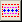
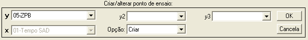
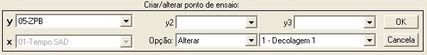
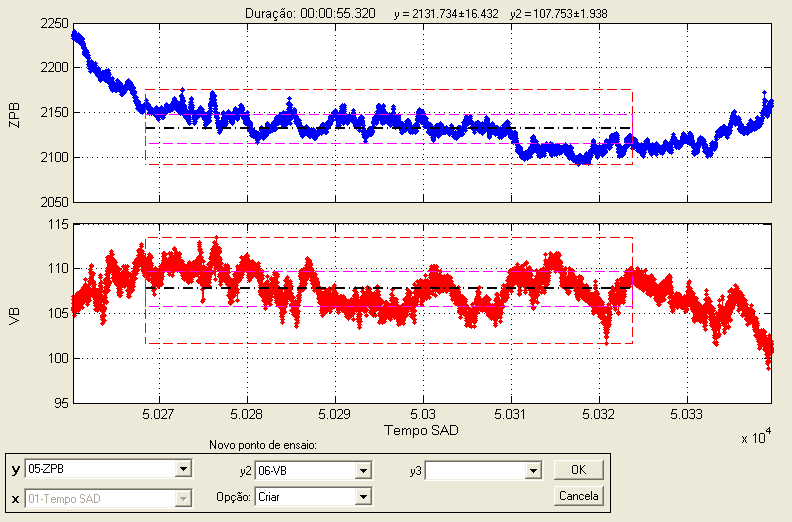
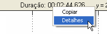
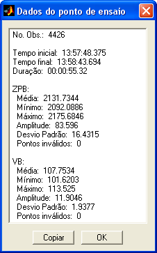
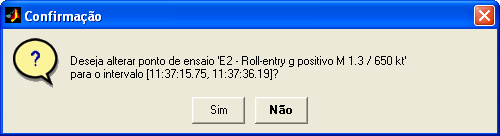

| Menu Ferramentas |
  |
Essa operação permite definir um novo ponto de ensaio ou alterar o intervalo de um ponto de ensaio já definido diretamente sobre o gráfico.
- Usando as funções de zoom, defina um intervalo aproximado que contenha o ponto de ensaio desejado na parte visível do gráfico principal;
- Clique em “Ferramentas ►
Gerenciamento de pontos de ensaio ...
► Criar/alterar ponto de ensaio”
ou no botão 
Caso não haja
tempo de referência
definido, o usuário será solicitado a cadastrá-lo.
A Caixa de
Diálogo solicitará que o usuário indique até três parâmetros
para visualização:


● O campo “x”
será alterado automaticamente para o
tempo de referência e não poderá ser alterado.
● Nos campos “y”, “y2” e “y3”, selecione até três parâmetros para visualização. A janela será subdividida em até três gráficos para apresentação dos parâmetros individualmente.
● No campo
“Opção”, defina se deseja criar um novo ponto de ensaio ou alterar um ponto de ensaio já definido.
●
Caso a opção "Alterar" esteja selecionada, será apresentado
um campo para que o usuário indique o ponto de ensaio que
deseja
alterar.

Os extremos do intervalo podem ser alterados usando o botão esquedo do mouse, de forma a definir corretamente o intervalo desejado para o ponto de ensaio.
Na parte superior do gráfico, será apresentada a duração do intervalo definido, o valor médio e o desvio padrão de cada parâmetro.
Ao clicar com o botão direito do mouse, surgirá um menu com as opções “Copiar” e “Detalhes”.

- Copiar: Ao clicar nessa
opção a informação será copiada
como texto para a Área de Transferência do Windows, de onde pode ser
colada
em qualquer aplicativo editor de texto.
- Detalhes: Ao clicar nessa
opção será
apresentada uma janela com os detalhes do intervalo definido. Serão
apresentados:
-
Número de observações (tamanho da amostra);
-
Tempo inicial;
- Tempo final;
- Duração do intervalo; e
- Estatística de cada parâmetro selecionado:
- Valor médio;
-
Valor mínimo;
- Valor máximo;
- Amplitude;
- Desvio padrão; e
- Número de observações
inválidas.
Exemplo:

O botão
“Copiar” copia os detalhes da validação para a Área
de Transferência do Windows e o botão “OK” fecha a janela.
Após definir o
intervalo e clicar OK, o R_DAT
irá informar o intervalo de tempo no formato HH:MM:SS.MS para
confirmação:


Caso seja um
novo ponto de ensaio, indique o
grupo, o número e a
descrição sucinta do mesmo:

Para criar um novo grupo de pontos de ensaio, selecione a opção "Novo Grupo" e indique o nome após clicar "OK":

Os parâmetros
“Número” e “Descrição” são compostos por
textos alfanuméricos não-vazios, limitados respectivamente a oito e 56
caracteres.
O nome do novo grupo é composto por texto alfanumérico não-vazio, limitado a 16 caracteres.
Ao clicar “OK”,
o ponto será acrescentado à lista de pontos
de ensaio e poderá ser gerenciado pela ferramenta
de edição de pontos de ensaio.
| |
Editor
de pontos de ensaio |
Definir
intervalo como ponto de ensaio |
|